He won’t leave his chick
He’s starving, and he won’t leave his chick.
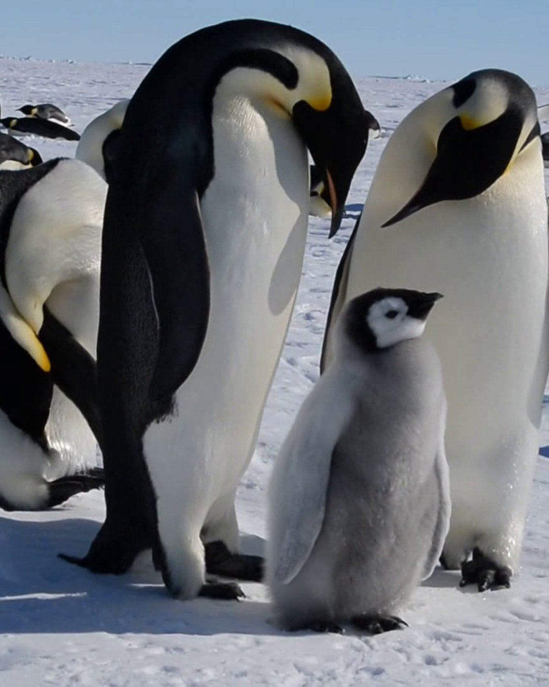
He hasn’t eaten in 115 days.
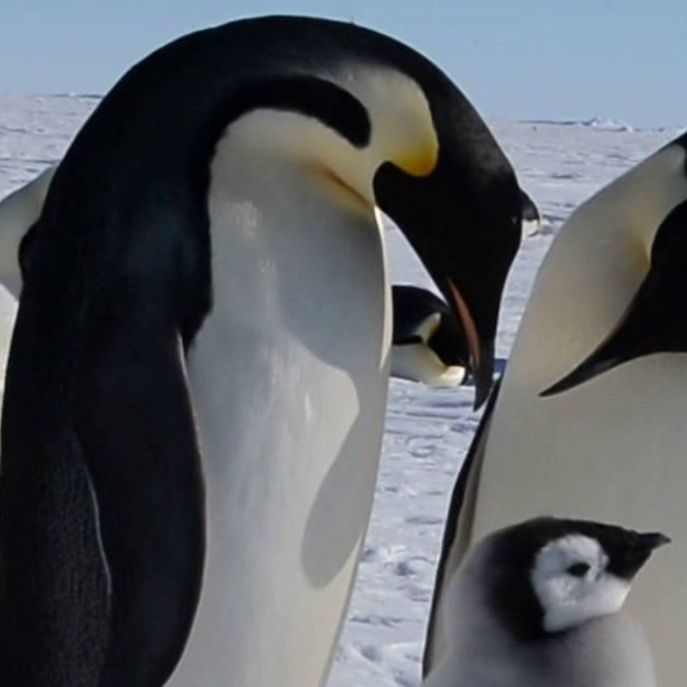
The mother went to sea to find food.
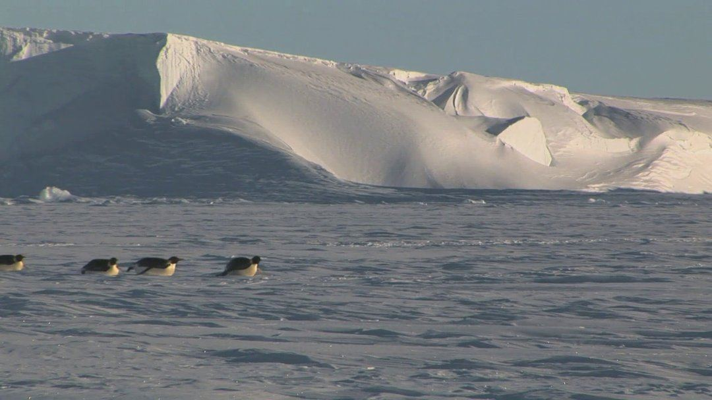
He stayed, holding their egg on his feet, all winter.
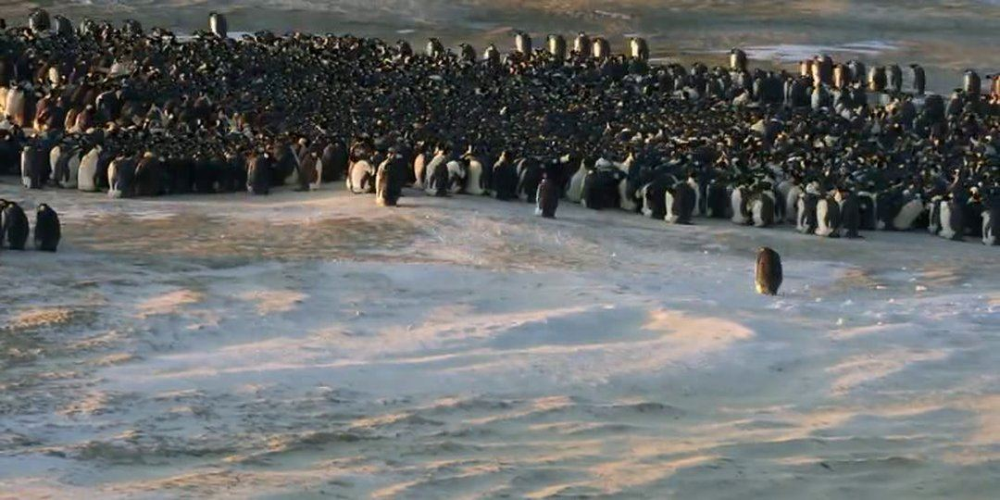
The egg hatched.
She still wasn’t back.
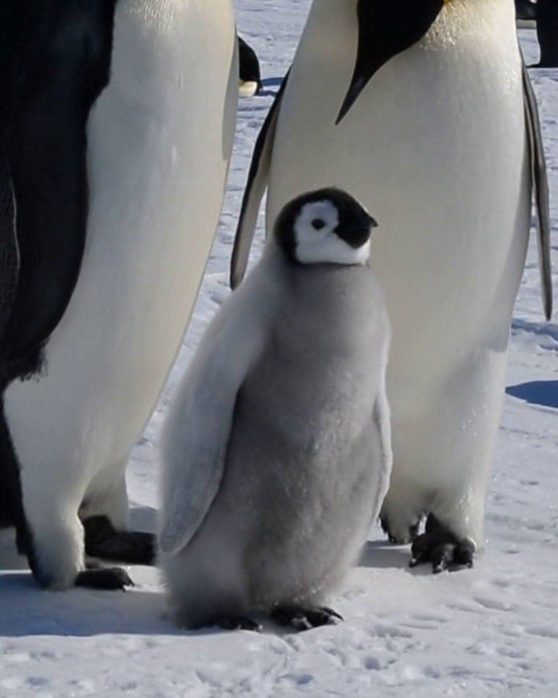
So he made milk in his own throat, to keep it alive.
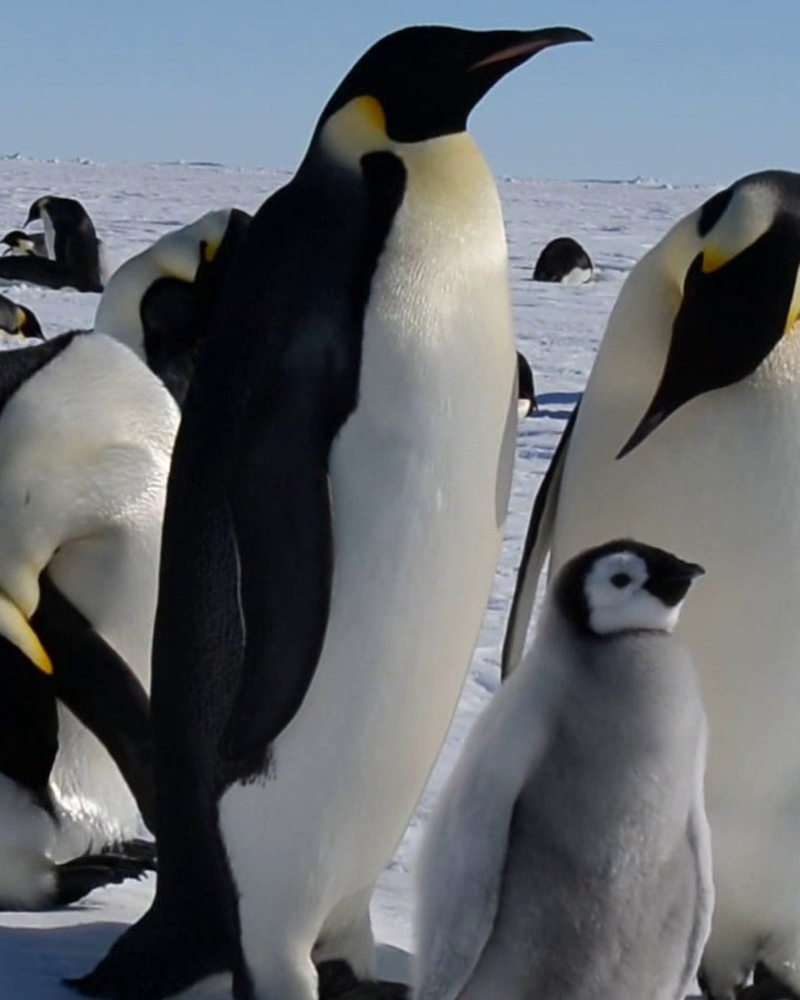
By then, he’d gone from 38 kilos to 18.
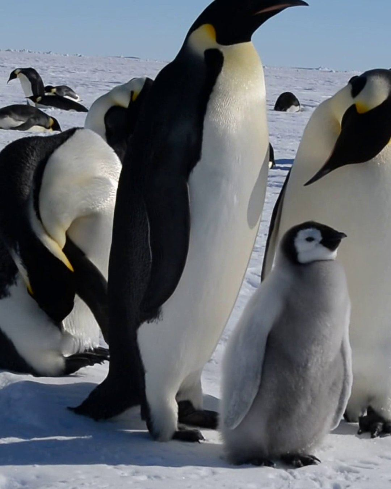
Almost half of him, gone.
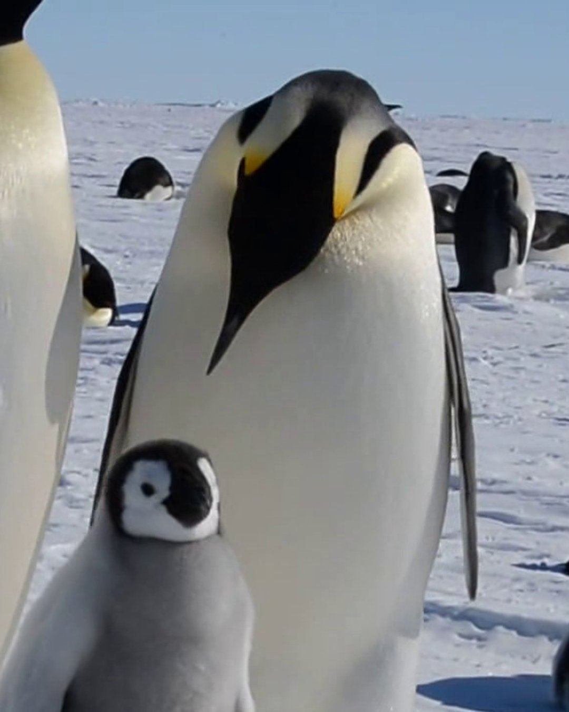
When she finally came back, he walked 100 kilometres to the sea to eat.
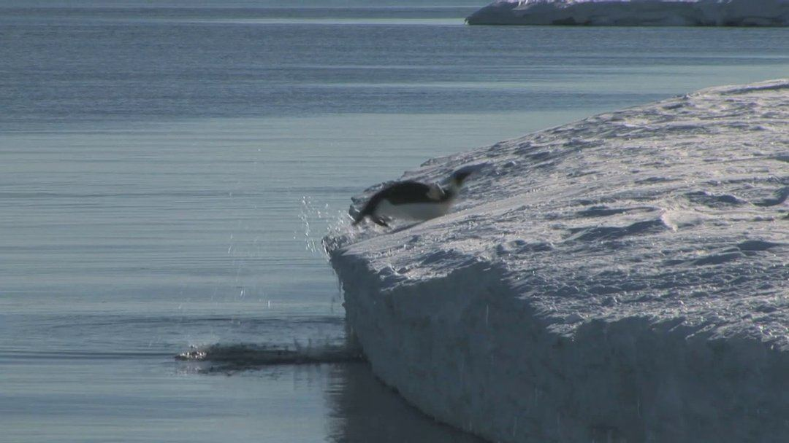
Some dads are like him.
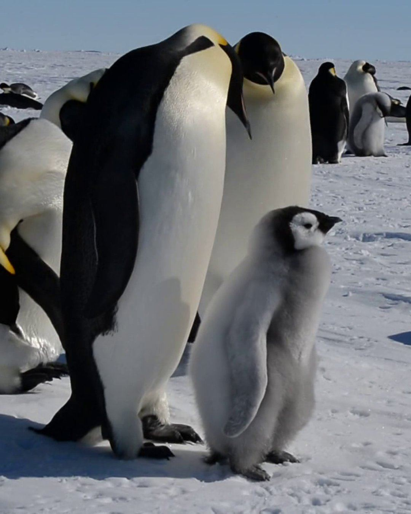
They always eat last.
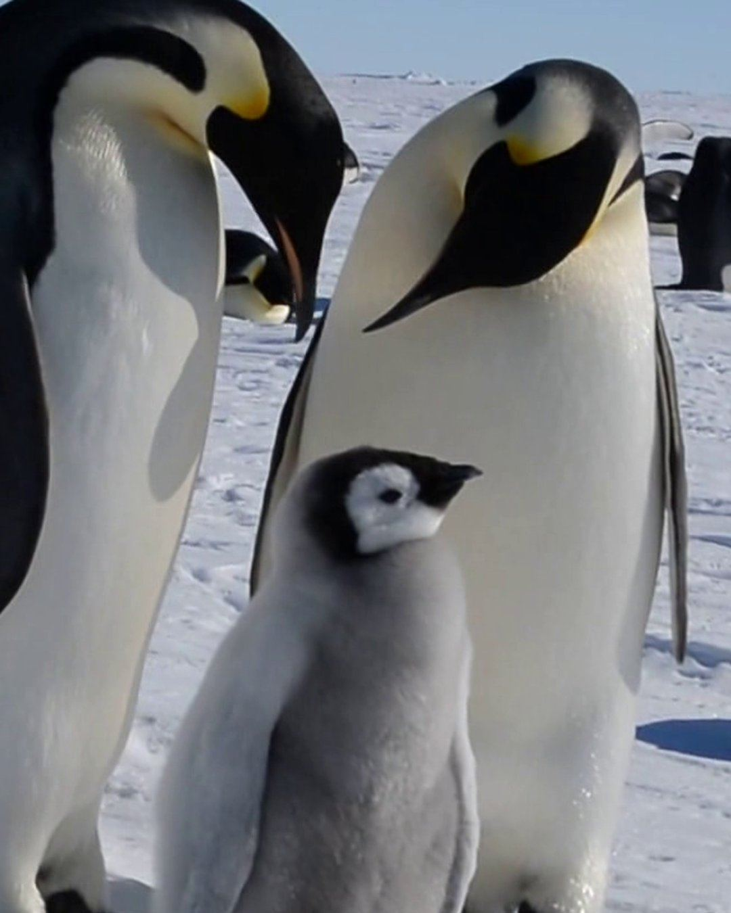
Based on a true story: what emperor penguin dads do. Real emperor penguins, not one bird throughout; the chick shown is weeks old. Footage, cropped and edited: “Life in the Colony” by Christopher Michel (CC BY 2.0). “Emperor penguins – the biggest of all” by Discovering Antarctica (CC BY 3.0). Huddle time-lapse by Zitterbart, Wienecke, Butler and Fabry, PLOS ONE 2011 (CC BY 2.5). Facts: Wikipedia, “Emperor penguin”; Journal of Experimental Biology (2018).